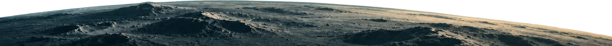

Explore beyond Earth.
Encontre na Terra ambientes
semelhantes aos de Marte e da Lua.
- Análise de terrenos
- Dados geoespaciais
- Inteligência artificial

Explorar
Escolha um local fixo, diga para que serve o análogo e veja quais células de 5 × 5 km da Terra mais se parecem — e em quê.
Análogos na Terra
Simulação — não são medições reais
O que é análogo — e o que não é
Selecione um resultado para ver a comparação.
Análises
Quanto o resultado depende dos pesos e da qualidade dos dados — e como o ranking é calculado.
Sobre
ARA — Analog Research & Analysis. NASA Space Apps Challenge 2026.